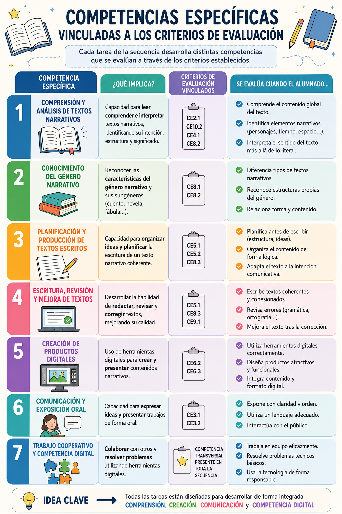

Competencias específicas

Competencia específica 3: Producir textos orales y multimodales con fluidez, coherencia, cohesión y registro adecuado, atendiendo a las convenciones propias de los diferentes géneros discursivos, y participar en interacciones orales con actitud cooperativa y respetuosa, tanto para construir conocimiento y establecer vínculos personales como para intervenir de manera activa e informada en diferentes contextos sociales.Competencia específica 4: Comprender, interpretar y valorar textos escritos, con sentido crítico y diferentes propósitos de lectura, reconociendo el sentido global y las ideas principales y secundarias, identificando la intención del emisor, reflexionando sobre el contenido y la forma y evaluando su calidad y fiabilidad, para dar respuesta a necesidades e intereses comunicativos diversos y para construir conocimiento
Competencia específica 5: Producir textos escritos y multimodales coherentes, cohesionados, adecuados y correctos atendiendo a las convenciones propias del género discursivo elegido, para construir conocimiento y dar respuesta de manera informada, eficaz y creativa a demandas comunicativas concretas
Competencia específica 6: Seleccionar y contrastar información procedente de diferentes fuentes de manera progresivamente autónoma, evaluando su fiabilidad y pertinencia en función de los objetivos de lectura y evitando los riesgos de manipulación y desinformación, e integrarla y transformarla en conocimiento para comunicarla, adoptando un punto de vista crítico y personal a la par que respetuoso con la propiedad intelectual.
Competencia específica 8: Leer, interpretar y valorar obras o fragmentos literarios del patrimonio andaluz, nacional y universal, utilizando un metalenguaje específico y movilizando la experiencia biográfica y los conocimientos literarios y culturales que permiten establecer vínculos entre textos diversos y con otras manifestaciones artísticas, para conformar un mapa cultural, para ensanchar las posibilidades de disfrute de la literatura y para crear textos de intención literaria
Competencia específica 9: Movilizar el conocimiento sobre la estructura de la lengua y sus usos y reflexionar de manera progresivamente autónoma sobre las elecciones lingüísticas y discursivas, con la terminología adecuada, para desarrollar la conciencia lingüística, para aumentar el repertorio comunicativo y para mejorar las destrezas tanto de producción oral y escrita como de comprensión e interpretación crítica.